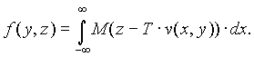
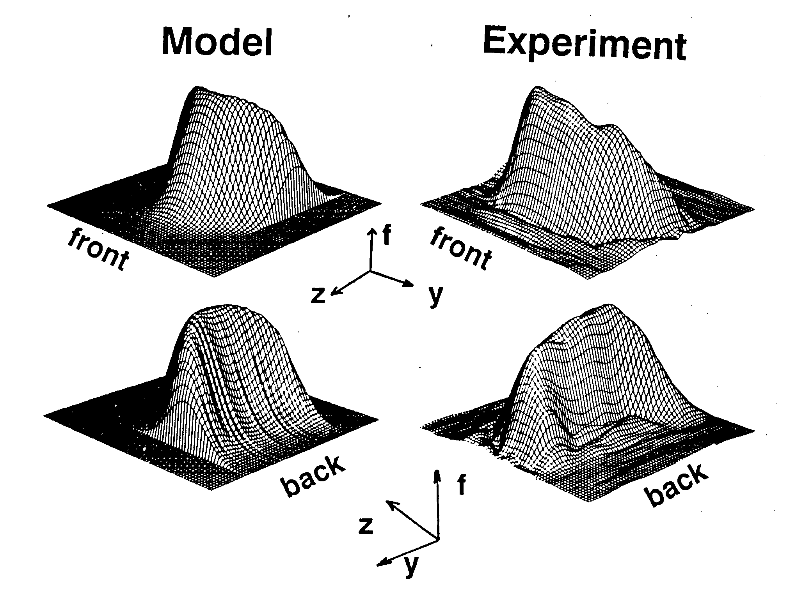

Velocity Distributions in Small Tubes
Dear Professor Shapiro:
In the course of work aimed at in vivo NMR blood velocity measurement some interesting pictures have been generated recently. The idea is to tag a transverse slice flowing in the z-direction (the velocity and static field are parallel) and subsequently read-out the position of the slice with an even echo. A 1-D FT of the echo produces what we call a 1-D velocity distribution (VD) [1]. If a series of 2nd echoes is collected with a stepped, phase-encoding gradient pulse applied during the first echo, and the data set is subjected to a 2-D FT, 2-D VD's are produced: experimental and simulated 2-D VD's are shown below. The naive simulation shown is a numerical integration of:

where f(y, z) is the distribution of spins (proportional to the distribution of velocities), M(·) is the magnetization profile of the slice, T is the time between slice selection and the 2nd echo, v(x, y) is the axial velocity profile, y is the phase-encoding direction, and x is perpendicular to y and z. Note that z - T·v(x,y) is the initial position of the fluid subsequently detected at x, y, z.

The figure shows a calculated distribution (labeled Model) and an experimental distribution. Each is shown from the "front" and "back". In the calculated distribution function, slice profile was Gaussian, and velocity profile was parabolic. The experimental distribution was calculated from 33 echoes obtained from water flowing in an 0.95 cm ID tube, with Reynolds number approximately 2000 (mean velocity » 20 cm/s).
Please credit this contribution to the subscription of Eiichi Fukushima.
Sincerely,
Stephen Altobelli
Caprihan A., J. G. Davis, S. A. Altobelli, and E. Fukushima. A New Method for Flow Velocity Measurement Frequency Encoded NMR. Magnetic Resonance in Medicine, 3:352-362, 1986.